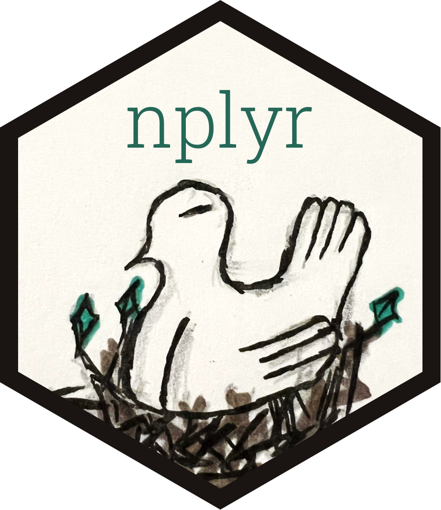
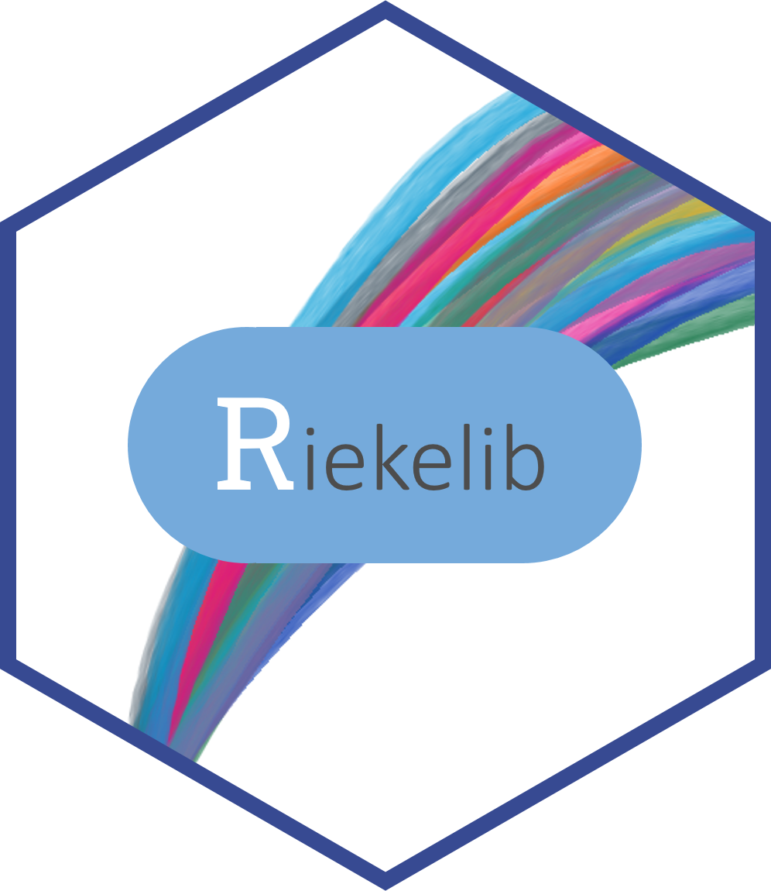
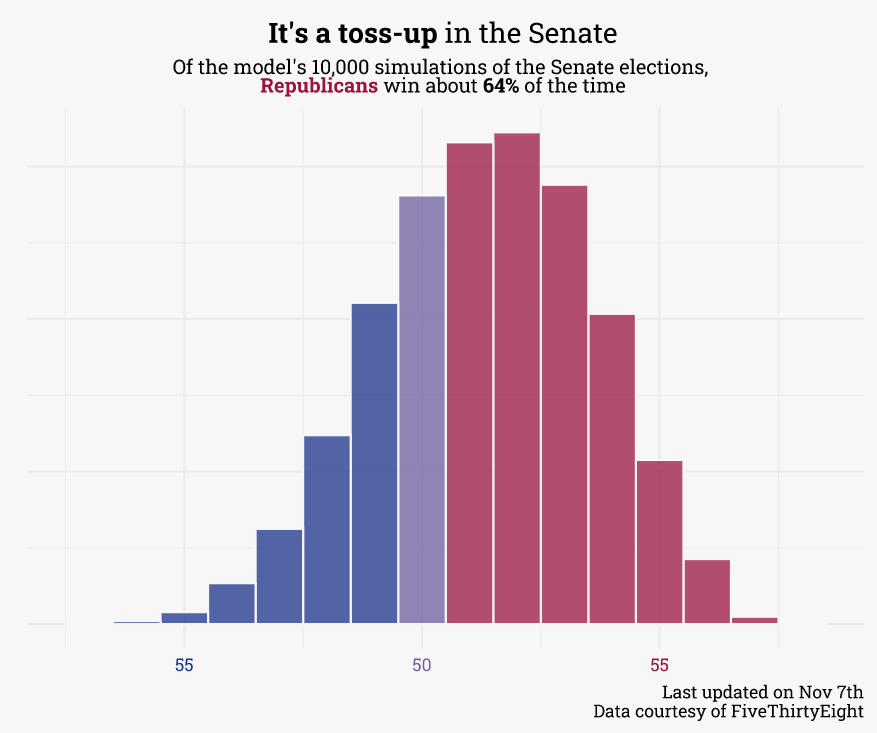
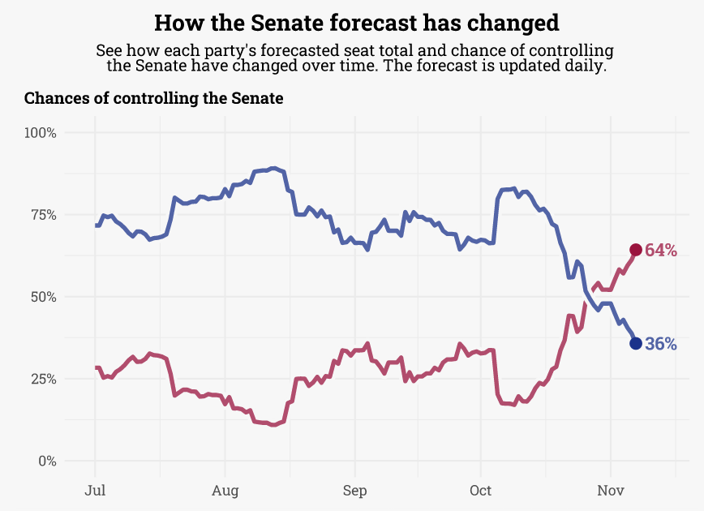
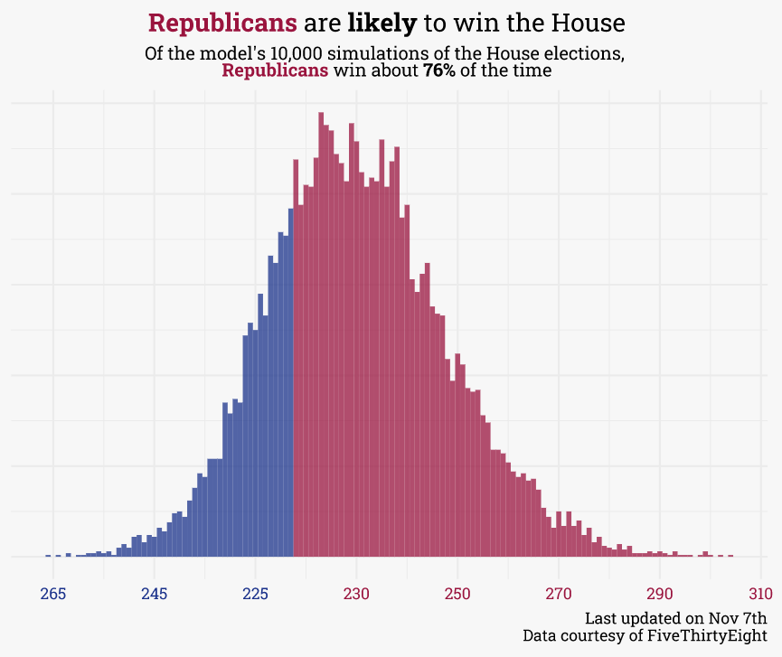
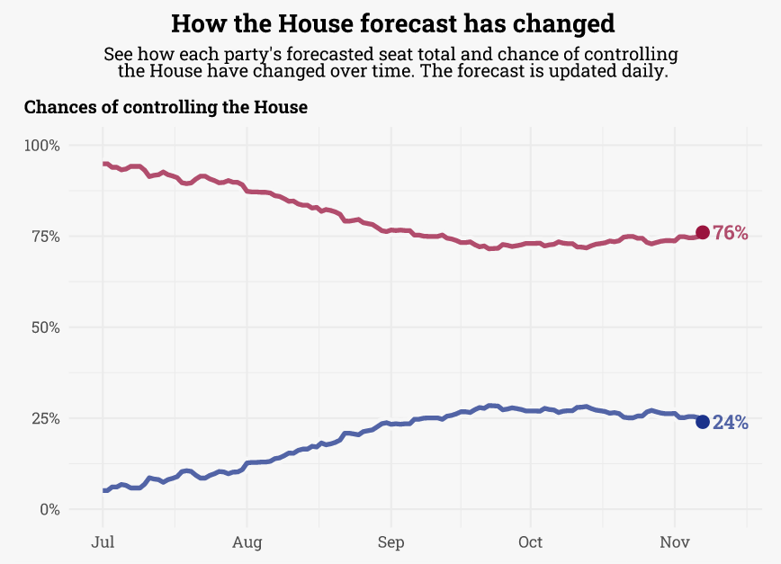
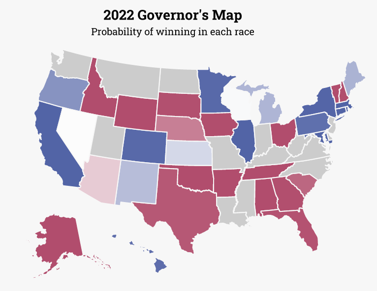

Projects
Open Source Software
workboots

Author: Mark Rieke
License: MIT


Generate bootstrap 🥾 prediction intervals from a tidymodel workflow.
nplyr

Author: Mark Rieke
License: MIT


nplyr: a grammar of (nested) data manipulation 🐦.
riekelib

Author: Mark Rieke
License: MIT
A collection of functions I use regularly.
Other
2022 Midterm Forecast
A daily forecast for each seat in each congressional chamber.
Senate


House


Governor

rstudio::conf(2022)